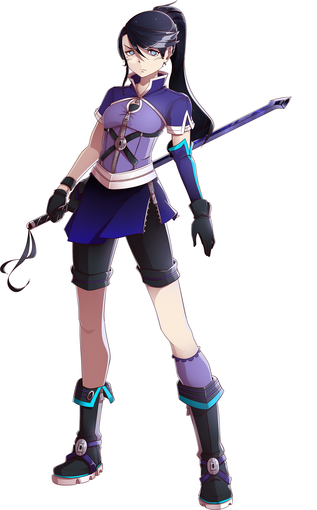
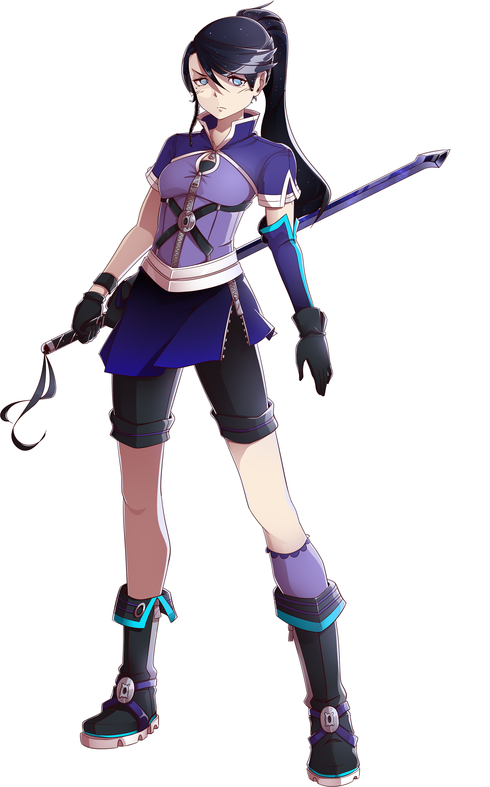

Kesshō Dinao

name: Kesshō Dinao
age: 17
hair color: black with sparkles
hair style: ponytail in the back with a single loose braid hanging from the front right side
skin tone: pale
eye color: pale steel blue glowing, with white pupils
height: 5 ft 2.5 in
key attribute: perfect
right-handed
body type: petite
Character Bio/Personality:
Much more proactive than the Starlit Mikado, Kesshō Dinao is a very capable fighter but
has no weapon to call her own. She seeks the Tenebris Operiet, a legendary weapon with ties to
the Tŏngī Kōtei-fū imperial throne.